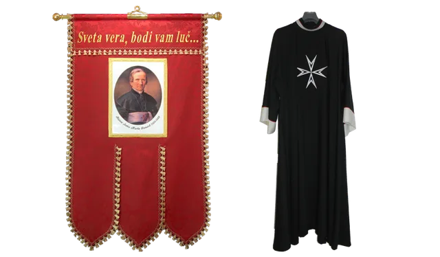

Betka Golob s. p.
Handmade church vestments and folk embroidery
Handcrafted in Preserje pri Radomljah, Slovenia. Chasubles, stoles, albs, altar cloths and banners — sewn, embroidered and restored to order.

Vestments
Chasubles, copes, dalmatics, albs and stoles in every liturgical colour. Each piece is made to measure, with the cut and embroidery agreed with the parish.
Cloths and embroidery
Altar cloths, baptismal cloths and Richelieu embroidery, alongside Slovenian folk embroidery for ceremonial and festive wear beyond the church year.
Restoration
Repair and restoration of older vestments, canopies and tabernacles — from relining and edging to transferring preserved embroidery onto new fabric.